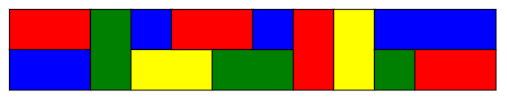
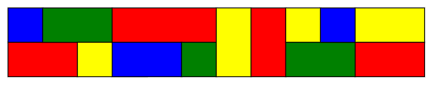

Project Euler 670
Project Euler 670
题目
Colouring a Strip
A certain type of tile comes in three different sizes - \(1\times1, 1\times2,\) and \(1\times3\) - and in four different colours: blue, green, red and yellow. There is an unlimited number of tiles available in each combination of size and colour.
These are used to tile a \(2\times n\) rectangle, where \(n\) is a positive integer, subject to the following conditions:
- The rectangle must be fully covered by non-overlapping tiles.
- It is not permitted for four tiles to have their corners meeting at a single point.
- Adjacent tiles must be of different colours.
For example, the following is an acceptable tiling of a \(2\times 12\) rectangle:

but the following is not an acceptable tiling, because it violates the “no four corners meeting at a point” rule:

Let \(F(n)\) be the number of ways the \(2\times n\) rectangle can be tiled subject to these rules. Where reflecting horizontally or vertically would give a different tiling, these tilings are to be counted separately.
For example, \(F(2) = 120\), \(F(5) = 45876\), and \(F(100)\equiv 53275818 \pmod{1\,000\,004\,321}\).
Find \(F(10^{16}) \bmod 1\,000\,004\,321\).
解决方案
考虑从左到右逐列观察。令第 \(t\) 列的上格颜色为 \(a_t\)，下格颜色为 \(b_t\)。在同一行里，相邻列若颜色相同：\(a_t=a_{t+1}\)，则这两个格子不能属于两块不同的砖（否则两砖共享边且同色，违反规则 3），只能是同一块水平砖延伸过去。因为水平砖长度最多 \(3\)，所以同一行中相同颜色的连续段长度最多为 \(3\)。
因此，每一行就是把长度为 \(1\sim3\) 的同色段切出来，这些同色段就是该行的水平砖。
注意到，若某列出现 \(a_t=b_t\)，若上下格属于两块不同的砖，则这两砖在该列共享一条水平边且同色，违反规则 3，所以只能是同一块竖直 \(2\times1\) 砖覆盖这一列。因此，\(a_t=b_t\) 当且仅当第 \(t\) 列是一块竖直 \(2\times1\) 砖。
四角相遇只可能发生在某条列分界线 \(t|t+1\) 与两行分界线的交点上。在边界 \(t|t+1\)上，若第 \(t\) 列上下颜色不同 \(a_t\ne b_t\)，那么第 \(t\) 列必然由两块水平砖分别覆盖（上下两块不同砖）。若同时在 \(t+1\) 列，上下两行都换砖，即：\(a_{t+1}\ne a_t\)（上行颜色变了，代表上行在 \(t\) 处结束一块砖并从 \(t+1\) 开始新砖），并且同理，\(b_{t+1}\ne b_t\)那么在交点处会同时出现：左上砖、左下砖、右上砖、右下砖——正好四块砖角相遇，违反规则 3。
相反，如果右侧 \(t+1\) 列是竖直砖（即 \(a_{t+1}=b_{t+1}\)），则右侧上下是同一块砖，只会有三块砖参与该点，不违反规则 3；同理如果左侧是竖直砖也不会四角相遇。因此得到关键等价条件：当第 \(t\) 列是水平/水平（\(a_t\ne b_t\)）时，下一列若不是竖直砖，则不允许上下两行同时换色。换句话说：在 \(a_t\ne b_t\land a_{t+1}\ne b_{t+1}\) 时，必须满足 \(a_{t+1}=a_t\) 或 \(b_{t+1}=b_t\)（至少一行继续同色段）。
颜色只有相等/不等和需要避开多少种已有颜色会影响计数，颜色名字本身不重要；对所有颜色做任意置换会把合法铺法双射到合法铺法。因此可用规范代表色压缩状态。令颜色总数为 \(k\)（题目中 \(k=4\)），定义两类状态：
- 竖直状态 \(E\)。当前最右列是一块竖直 \(2\times1\) 砖（上下同色）。在规范化里只记为一个状态 \(E\)。
- 水平状态 \(D_{i,j}\)（9 个）。当前最右列上下由两块水平砖覆盖（上下颜色不同），并记录：\(i\)表示上行当前同色段的长度（\(1,2,3\)），\(j\)表示下行当前同色段的长度（\(1,2,3\)）。因此共有 \(3\times3=9\) 个状态：\(D_{1,1}, D_{1,2}, \dots, D_{3,3}\)。在颜色规范化里，把上行当前颜色记作 \(0\)，下行记作 \(1\)（仅表达不同），这样就只剩这些长度参数。于是总状态数为 \(1+9=10\)。
我们按新增一列从 \(v_n\) 转到 \(v_{n+1}\)，其中 \(v_n[s]\) 表示铺到长度 \(n\)、最右列处于状态 \(s\) 的铺法数。
假设现在是竖直砖，设最右列竖直砖颜色为 \(A\)。
下一列两种选择： 1. 仍放竖直砖：颜色 \(C\ne A\)，可选 \(k-1\) 种，转到 \(E\)。 2. 放两块水平砖（上下不同色）：上色 \(c\ne A\) 有 \(k-1\) 种；下色 \(d\ne A,c\) 有 \(k-2\) 种，且上下不同保证成立。共 \((k-1)(k-2)\) 种，转到 \(D_{1,1}\)。
假设现在是水平砖，设当前上色为 \(a\)，下色为 \(b\)，且 \(a\ne b\)。
下一列有如下选择：
- 放竖直砖：颜色 \(c\) 需同时避开 \(a,b\)，有 \(k-2\) 种，转到 \(E\)。这一步允许上下同时换色，因为右侧成为竖直砖，不会四角相遇。
- 不放竖直砖（上下仍是两块水平砖），则必须满足“至少一行继续”（避免四角相遇）：
- 两行都继续：需要 \(i<3, j<3\)，且颜色被唯一确定（仍为 \(a,b\)），转到 \(D_{i+1,j+1}\)，系数 \(1\)。
- 仅上行继续、下行换色：需要 \(i<3\)。下行新色要避开 \(a\)（与上行竖邻）、避开 \(b\)（与下行左邻），共 \(k-2\) 种，转到 \(D_{i+1,1}\)。
- 仅下行继续、上行换色：需要 \(j<3\)，同理系数 \(k-2\)，转到 \(D_{1,j+1}\)。
当 \(i=j=3\) 时，两行都不能继续，只能走 (1) 放竖直砖。
按以下编号：\(0: E;1,\dots,9: D_{1,1}, D_{1,2}, D_{1,3}, D_{2,1}, D_{2,2}, D_{2,3}, D_{3,1}, D_{3,2}, D_{3,3}\)
令 \(k=4\)，则 \(k-1=3, k-2=2, (k-1)(k-2)=6\)。因此转移矩阵 \(M\)（满足 \(v_{n+1}=Mv_n\)）为：
\[ M= \begin{pmatrix} 3&2&2&2&2&2&2&2&2&2\\ 6&0&0&0&0&0&0&0&0&0\\ 0&2&0&0&2&0&0&2&0&0\\ 0&0&2&0&0&2&0&0&2&0\\ 0&2&2&2&0&0&0&0&0&0\\ 0&1&0&0&0&0&0&0&0&0\\ 0&0&1&0&0&0&0&0&0&0\\ 0&0&0&0&2&2&2&0&0&0\\ 0&0&0&0&1&0&0&0&0&0\\ 0&0&0&0&0&1&0&0&0&0\\ \end{pmatrix}. \]
长度为 \(1\) 时，若第一列为竖直砖：颜色任取 \(4\) 种 \(\to\) 状态 \(E\) 为 \(4\)；若第一列为两块水平砖：上色 \(4\) 种，下色 \(3\) 种 \(\to 12\)，且此时两行同色段长度都是 \(1\) \(\to D_{1,1}\) 为 \(12\)。因此\(v_1=(4,12,0,0,0,0,0,0,0,0)^T.\)最终通过矩阵快速幂计算\(v_n\)，并得到最终结果：
\[ F(n)=\sum_{s=0}^{9}(v_n)_s. \]
代码
1 | N = 10 ** 16 |